Data publicării: 15.04.2019
Autor articol: Adrian Iftene
Introducere
Realitatea virtuală (engleză virtual reality, VR) este o tehnologie de ultimă oră, care se bucură de o atenție deosebită în ultimii ani. Prin intermediul realității virtuale putem crea o realitate care nu există, ea fiind separată de cea fizică. Realitatea virtuală poate fi văzută ca o realitatea imaginativă, termenul virtual presupunând absența unor limite vizuale, palpabile, totul fiind legat de imaginația noastră.
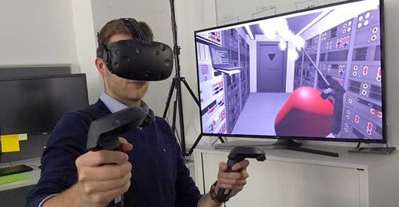
În termeni tehnici, realitatea virtuală descrie un mediu tridimensional generat de un computer, un mediu în care ne putem transpune cu ajutorul aplicațiilor (vezi Figura 1). Odată transpuși în această lume virtuală putem interacționa cu obiectele, cu actorii virtuali, dar și cu alte persoane transpuse ca și noi în această lume virtuală cu scopul de a realiza împreună anumite sarcini.
Realitatea virtuală poate fi aplicată în diverse domenii, cum ar fi: arhitectură (modelare, simulare și vizualizare), sport, medicină (experimente și simulări), simulatoare (piloți, astronauți, șoferi), artă, divertisment (jocuri și filme) și nu în ultimul rând educație (Vlada și Popovici, 2004), (Cruz-Neira și Fernández, 2018) și (Salah et al., 2019).
Arhitectură – aplicațiile moderne ce folosesc realitatea virtuală permit modelarea rapidă și vizualizarea în imagini 3 D a viitoarelor construcții. Se câștigă timp, iar modelele 3 D pot fi trimise ușor spre analiză și aprobare clienților sau colegilor oriunde pe glob (vezi Figura 2).
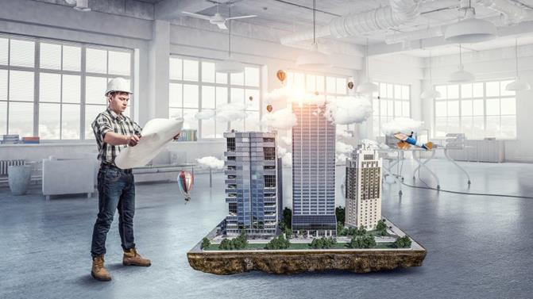
Sport – poți participa la meciuri de tenis, baschet, fotbal american, fotbal, hochei, golf, squash de acasă sau dintr-o sală special amenajată, unde poți interacționa cu prietenii de la distanță (vezi Figura 3). Se folosi instrumente speciale dotate cu senzori sau se pot folosi articole sportive speciale, care fac ca experiența să fie cât mai aproape de realitate.
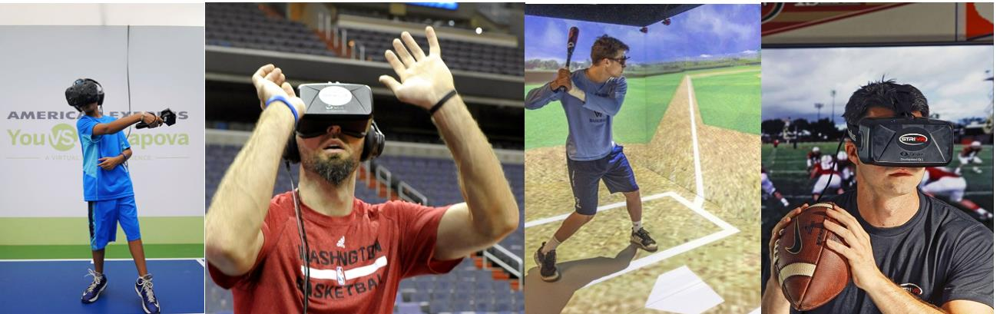
Medicină – învățarea, experimentarea, operațiile devin mai intuitive și se pot realiza oriunde (în sala de curs, în laborator, dar și acasă sau în altă parte) cu ajutorul realității virtuale. În Figura 4 este un exemplu de model virtual folosit la învățare.
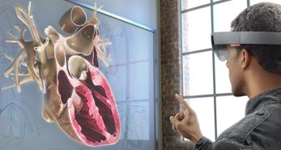
Operațiile de zoom le permit acestora să vadă detalii, care nu ar fi ușor de văzut cu ochiul liber, iar internetul le permite doctorilor cu experiență să participe pasiv sau chiar activ la operații la distanță. Un aspect deloc de neglijat sunt costurile care scad foarte mult, deoarece modelele 3 D pot fi analizate și studiate de studenți, profesori, fără a expira și fără a fi deteriorate de trecerea timpului. În Figura 5 sunt prezentate operații pe pacienți ce folosesc tehnologia modernă oferită de realitatea virtuală.
Simulatoarele virtuale – îi ajută pe cei ce doresc să învețe să conducă o mașină, un avion, o bicicletă sau o motocicletă, creându-le o experiență foarte apropiată de realitate. Pe de o parte se reduc costurile necesare, dar pe de altă parte se asigură siguranța și protecția lor. Contextul în care se află utilizatorul poate fi unul real ca în Figura 5 în stânga, sau poate fi unul simulat ca în Figura 6 în dreapta.
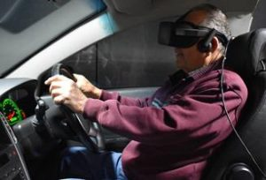
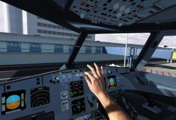
Artă – realitatea virtuală ne ajută să vizităm muzee și galerii de artă de oriunde de pe glob (vezi Figura 7 în stânga) sau ne permite să realizăm propriile opere de artă într-o lume virtuală dedicată imaginației artistului (vezi Figura 7 în dreapta). Utilizatorul poate face aceste excursii și vizite virtuale împreună cu prietenii sau cu alți utilizatori interesați de frumos.
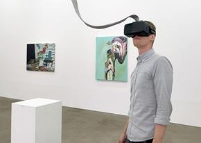
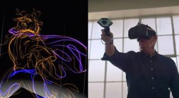
Jocurile virtuale – transpun utilizatorul într-o lume fascinantă descrisă în cele mai mici detalii, care fac interacțiunea să fie foarte realistă și atractivă (vezi Figura 8). Jocurile ce folosesc realitatea virtuală necesită resurse hardware semnificative, chiar de șapte ori mai multe în comparație cu jocurile clasice de pe calculator, conform unui studiu făcut de cei de la NVIDIA.
Aceștia arată că, dacă jocurile pe PC au nevoie de o rezoluție de 1920 X 1080 la 30 FPS, cele ce folosesc realitatea virtuală necesită o rezoluție de 3024 X 1680 la 90 FPS.
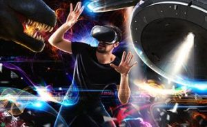
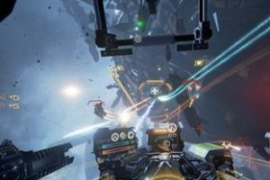
Filmele – încep să folosească din ce în ce mai mult realitatea virtuală, iar în prezent asistăm la o explozie a filmelor de animație și nu numai ce folosesc această tehnologie. Marea noutate față de filmele clasice vine din faptul că acestea permit o experiență unică de 360o creând contextul favorabil pentru o nouă industrie care va fi în creștere în perioada următoare (vezi Figura 9).
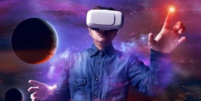
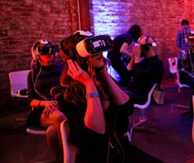
Educația – cu ajutorul realității virtuale este mai intuitivă și mai atrăgătoare pentru elevi și copii. Față de metodele clasice, tehnologia vine cu elemente noi precum animația, filmele, modele 3D, sunete din natură, etc. Scopul acestor tehnologii nu este de a înlocui metodele clasice folosite în educație, ci să le ajute și să le facă mai atractive pentru elevi și profesori. Se ajunge la situația în care se învață noțiuni noi fără a se conștientiza acest lucru, iar la materii precum chimia, fizica, geografia se poate experimenta atât individual, cât și în echipă (vezi Figura 10).
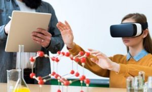
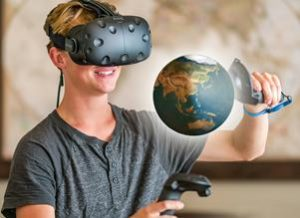
Putem ajunge la descoperiri noi în domenii care au un impact direct asupra vieților noastre de zi cu zi (Bălan et al., 2013). Această tehnologie este din ce în ce mai des întâlnită și ne putem aștepta la din ce în ce mai multe inovații din această sferă în perioada următoare (Hagl și Duane, 2018).
Telefoanele inteligente, tabletele și alte dispozitive mobile au fost dotate în ultimii ani cu senzori ce ne permit să simulăm lumea virtuală. Cei mai întâlniți senzori sunt magnetometrul, accelerometrul și giroscopul. Aceștia sunt foarte importanți pentru generarea realității virtuale, deoarece ne permit să simulăm mișcarea în spațiu care poate fi transferată în lumea virtuală.
Cele mai apreciate aplicații bazate pe realitate virtuală din 2019
Dacă acum câțiva ani ne duceam cu gândul la jocuri când auzeam de realitate virtuală și asta pe bună dreptate, în prezent aria domeniilor ce folosesc aceste tehnologii de ultimă oră s-a lărgit foarte mult. Vom vedea în continuare o parte din aceste aplicații foarte apreciate de cei care le folosesc.
Allumette
Studioul „Penrose Studios”, a realizat un film VR, care oferă posibilitatea încetinirii derulării acestuia, care cronologizează povestea unei tinere fete într-un sat din nori, este absolut uluitoare. În Allumette, utilizatorul acționează ca un aparat de filmare, putând explora ușor lumea minunată din film. Acesta poate explora cum dorește această lume putând chiar să ignore povestea principală, deoarece se află într-o povestire și nu într-un joc cu obiective bine definite. Interesant este faptul că deși niciunul dintre personajele din Allumette nu vorbește, formele de comunicare pe care le folosesc (sunete pline de emoții, zgomote, etc.) reușesc să transmită într-un mod eficient emoții și trăiri. Figura 11 prezintă această lume virtuală și personajele din ea.
Povestea este bazată pe un poem de Hans Christian Andersen, fiind atât fermecătoare, cât și emoționantă. Puține experiențe VR creează același senzație de apăsare și a prezenței pentru spectator, iar în Allumette, veți simți cu adevărat că ați fost transportat într-o lume a poveștilor. Allumette se află undeva între narațiune și jocurile video, și în acest mod se ridică deasupra genului ca o experiență fascinantă și atractivă pentru utilizator.
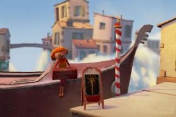
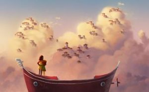
Colosse: A story in VR
Sunetele complexe și minunata animație a Samurai Jack-esque sunt forțele motrice din spatele Colosse, o poveste scurtă bazată pe experiența VR, care răspunde la privirea jucătorului, ducând firul acțiunii înainte. Descris de dezvoltatorul Fire Panda ca o “experiență în timp real a povestirilor”, Colosse se bucură de o recunoaștere pe scară largă, cu detalii utile pe toată durata desfășurării acțiunii. De exemplu, caracterul “vânător” este redat la doar 12 cadre pe secundă, în timp ce restul filmului este redat cu 60 de cadre pe secundă, contribuind la o atmosferă unică.
Semnalele audio și vizuale direcționează privirea jucătorului, iar anumite obiecte “așteaptă” să se activeze până când le privești, ceea ce oferă un sens firesc de desfășurare a acțiunilor. Anumite evenimente vor avea loc în funcție de direcția în care ne uităm, astfel încât să nu fim blocați niciodată în căutarea următoarei piese a puzzle-ului. Proiectat inițial ca un demo pentru VRJam Oculus Mobile, Colosse nu este la fel de elaborat ca Allumette, dar este cu siguranță oferă imagini ce merită văzute și o prezentare amuzantă a modurilor în care VR poate schimba povestirea. În Figura 12 sunt secvențe din filmul Colosse.
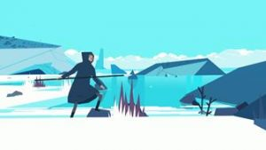
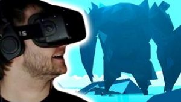
Google Earth VR
Când VR a început să se dezvolte ca un mediu de divertisment, a devenit clar faptul că aplicațiile precum Google Earth bazat pe VR vor fi foarte atractive. În prezent se poate zbura în jurul planetei ca un fel de vultur hipersonic fiind în același timp plăcut, dar și educativ, cel puțin pentru cei cărora le place geografia. Pentru cei care nu le place geografia, pot utiliza în continuare aplicația pentru a vizita obiective turistice ca Sfinxul sau podul Golden Gate sau se poate plăti o vizită digitală în capitala Djibouti.
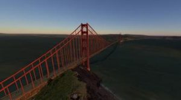
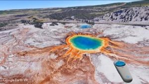
Nu este surprinzător că o mulțime de peisaje și zone par să fie un pic mai mult decât niște culori fără semnificație (mai ales dacă sunt utilizați ochelarii de tipul Google Cardboard), dar fiind o aplicație gratuită nu avem motive de supărare. Mărirea imaginilor pe distanțe mari în câteva secunde și coborârea pe structurile imense precum cea a barajului Hoover sunt încântătoare, chiar dacă nu sunt făcute la volanul unor mașini reale.
Kingspray Graffiti VR
O aplicație care permite artistului din noi să picteze pereți, acoperișuri, trenuri, etc. virtuale cu ajutorul vopselelor și spray-urilor virtuale. Kingspray ne oferă efecte realiste de picurare și pulverizare pentru a ne permite să ne personalizăm pe deplin capodopera. Putem încărca imagini și putem să le proiectăm pe suprafețe de vopsea pentru a le folosi ca șabloane, putem salva imagini de 360o de grade și chiar putem picta online cu până la trei prieteni.
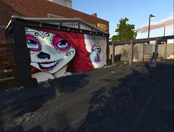
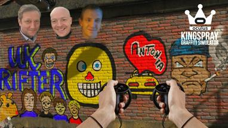
Ocean rift VR
Oceanul, dar mai ales adâncurile acestuia reprezintă un loc înspăimântător, dar minunat ce poate fi explorat foarte ușor cu ajutorul aplicației Ocean Rift VR. Experiența este asemănătoare cu cea dintr-un safari african, cu excepția faptului că suntem liberi să ne deplasăm oriunde dorim sub apă.
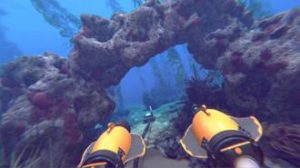
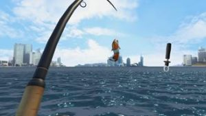
Explorarea universului subacvatic permite observarea faunei marine sălbatice, care include delfini, pești, rechini și multe altele. Spre suprafață ne vom întâlni cu broaștele țestoase marine, iar în apă mai adâncă ne vom întâlni cu animale periculoase. O altă activitate foarte apreciată de cei ce folosesc această aplicație este pescuitul peștelui, Ocean Rift oferind o experiență calmantă și terapeutică.
Concluzii
Realitatea virtuală a cunoscut o adevărată explozie în ultimii ani, fiind din ce în ce mai folosită, atât în industria jocurilor, dar și în domenii noi precum arhitectură, medicină, educație, sport, divertisment, simulatoare, etc.
Utilizatorii aplicațiilor ce folosesc realitatea virtuală sunt încântați de ușurința de folosire a acestor noi tehnologii și de gradul mare de atractivitate, experiențele trăite fiind de neuitat prin combinarea animațiilor, sunetelor și imaginilor foarte detaliate.
Referințe bibliografice
- Bălan, O., Moldoveanu, A., Moldoveanu, F., Morar, A. (2013) Realitatea Virtuală în Medicină- Realizări, Probleme şi Tendinţe. In T. Ștefănuț, C. Rusu (eds.), RoCHI 2013 pp. 91-95.
- Cruz-Neira, C., Fernández, M., Portalés, C. (2018) Virtual Reality and Games. Multimodal Technologies and Interact. 2018, 2, 8; 5 pages, doi:10.3390/mti2010008
- Hagl, R., Duane, A. (2018) Exploring the Impact of Augmented Reality and Virtual Reality Technologies on Business Model Innovation in Technology Companies in Germany. Australasian Conference on Information Systems Hagl & Duane 2018, UTS, Sydney Exploring the Impact of AR/VR on BMI, pp. 1-7.
- Salah, B., Abidi, M. H., Mian, S. H., Krid, M., Alkhalefah, H., Abdo, A. (2019) Virtual Reality-Based Engineering Education to Enhance Manufacturing Sustainability in Industry 4.0. Sustainability 2019, 11, 1477, 19 pages; doi:10.3390/su11051477
- Vlada, M., Popovici, M. (2004) Realitatea Virtuală (Virtual Reality), tehnologie modernă a informaticii aplicate. CNIV-2004, VIRTUAL LEARNING – Conferința Națională de Învăţământ Virtual, Ediţia a II-a, 29-31 oct. 2004, Noi tehnologii de e-learning, Software educațional, București, pp. 1-18.